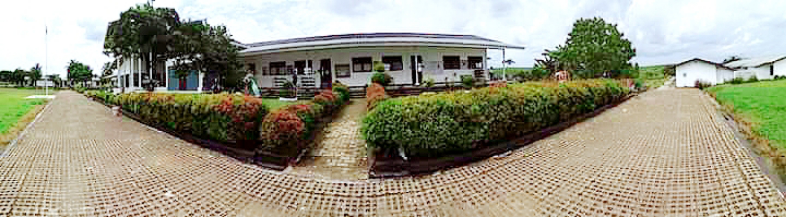
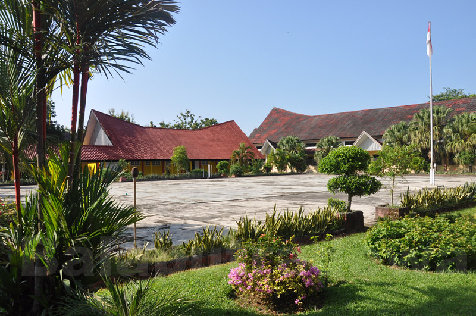

My Live
Joaquina Mps | Informatics Computer 05, LP3I Yogyakarta
My Name is Joaquina Melrimad Partilla Salsinha. I was born in Ermera 20th of February, 2000. Many people call me Joa. I'm second child from four sibling in my family. My father name is Mario Xavier Salsinha and My mother name is Amelia Fernanda Dedeus(Alm). My father is private employees in the province of Sumbawa. My mother died 10 years ago when i'm in elementary school. My first sister working in Cipta Futura Plantation PT, my second sister still in Vocational Hight School class three she majored is Software Engineering, and my last siste still in Vocationala Hight School class two and she majored is Civil Engineering. And I still in LP3I College Yogyakarya and I take Informatics Computer.
My Hobby
Joaquina Mps | Informatics Computer 05, LP3I Yogyakarta
My Education
Joaquina Mps | Informatics Computer 05, LP3I Yogyakarta

SDS Panditanesia Cifu is a elementary school that private.
SDS Panditanesia located in South Sumatra Province Districk Kab.Muara Enim PT.Cipta Futura.
SDS Panditanesia is the best school for me, because in this school I get a lot of knowledge

I get education junior in Junior Hoght School Number 1 Muara Enim.
I'm very love my education junior, because in there I get many friend from various city

I get education senior in Vocational Hight School Number 2 Muara Enim. I take Architecture.
Story of my senior school is big memory that I can't forget. Because in this school I get many beautiful experience,
and in this school I can get my dream to go abroad. Vocational hight school Number 2 Muara Enim is one of the
popular school in Kabupaten Muara Enim. So, I proud with my self beause I can get study in this school.

Now I continue my education in LP3I Yogyakarta, and I take Informatics Computer.
LP3I is education institution has a mission Work Before Graduation. I think the mission is verry good for
the young child in the right now